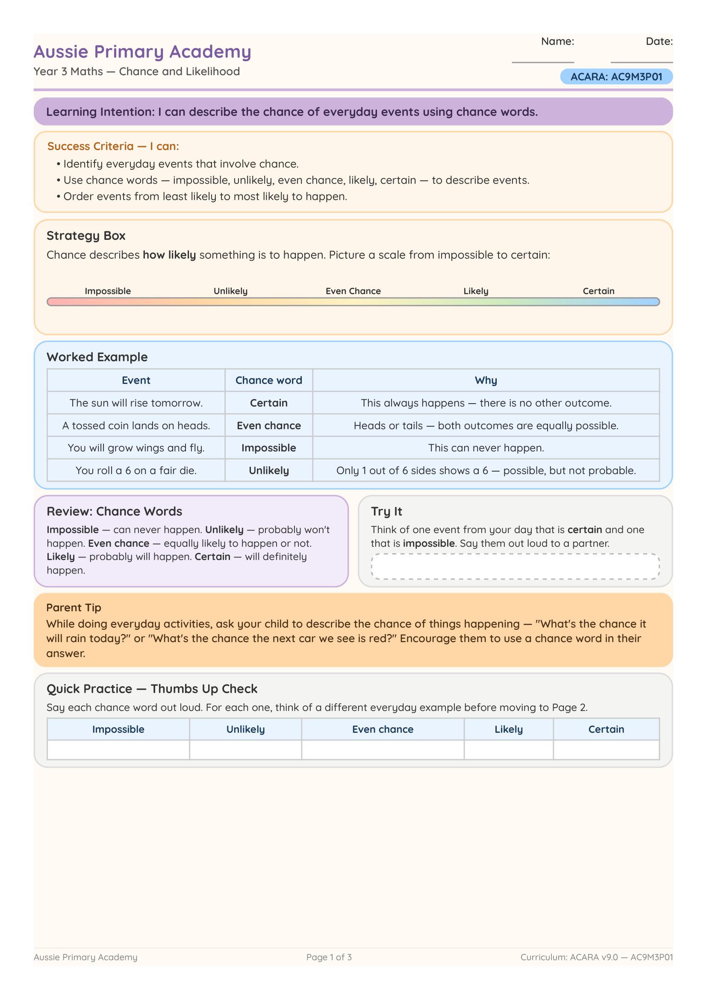

Year 3 · Maths · Probability · Free Printable
Chance and Likelihood Worksheet
Help Year 3 students describe the chance of everyday events using words such as possible, impossible, likely and unlikely.
Worksheet Preview

Preview of first page · Full worksheet inside the PDF
Quick Facts
- Primary learning: Maths · Probability
- Year level: Year 3
- Focus: Chance language and likelihood of events
- Curriculum code: AC9M3P01
- Format: Colour PDF · Printable A4
- Best for: Classroom, homework, tutoring, homeschool
About this worksheet
This Year 3 Maths worksheet helps students use chance language to describe everyday events. Students decide whether outcomes are certain, likely, unlikely or impossible.
Ready to print and use for whole-class lessons, small groups, homework or home learning.
Learning Intention
Students will describe the likelihood of everyday events using chance language.
Curriculum Alignment
AC9M3P01
Identify and describe outcomes of chance experiments and everyday events using chance language.
Aussie Primary Academy is an independent publisher and is not endorsed by ACARA.
Skills Practised
- Using chance vocabulary
- Ordering events by likelihood
- Identifying possible outcomes
- Reasoning about everyday events
Teacher / Parent Notes
Discuss real-life examples first (weather, games, sports) before students complete the worksheet.
How to use this worksheet
- Whole class: Explicit teaching + independent practice
- Small groups: Discussion of likelihood
- Homework: Send home for revision
- Tutoring / Homeschool: Clear instructions for independent use
Differentiation
Support: Provide a chance word bank (certain, likely, unlikely, impossible).
Core: Complete all activities independently.
Extend: Invent and order five new everyday events from most to least likely.